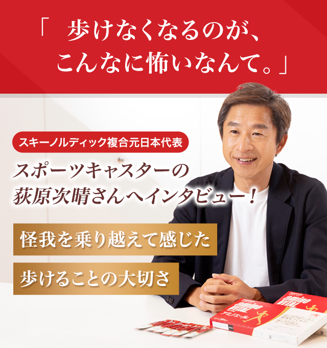
PR：味の素（株）
年齢を重ねると誰しも感じるのが、
疲れやすさや筋力の衰え。
それは運動習慣がある人でも同じです。
むしろ体の変化に敏感だからこそ、
気づきやすいといえます。
疲れやすさや筋力の衰え。
それは運動習慣がある人でも同じです。
むしろ体の変化に敏感だからこそ、
気づきやすいといえます。
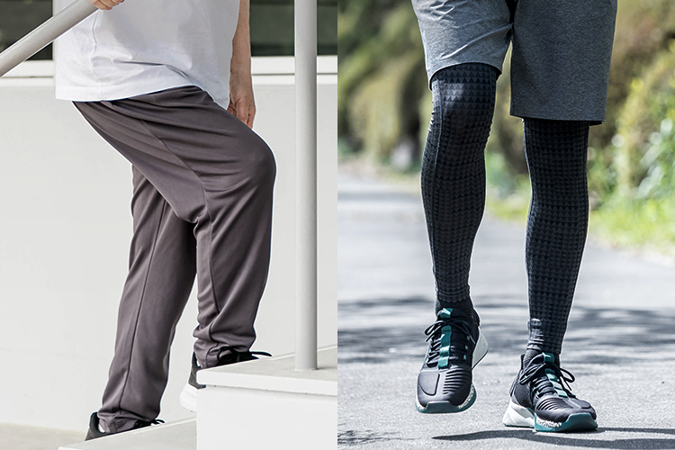
※画像はイメージです。
そこで今回は、
年齢による体の変化を実感してきた
スキー元日本代表で
スポーツキャスターの荻原次晴さんに
アミノバイタル®アミノエール®を
愛用するアンバサダーとしての
リアルな体験を伺いました。
年齢による体の変化を実感してきた
スキー元日本代表で
スポーツキャスターの荻原次晴さんに
アミノバイタル®アミノエール®を
愛用するアンバサダーとしての
リアルな体験を伺いました。
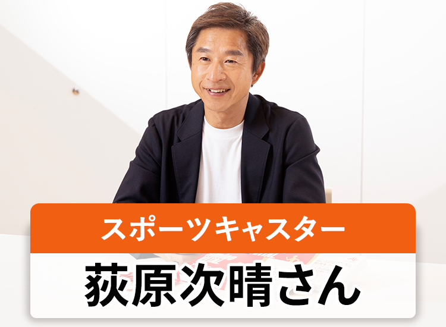
年齢による体の変化
荻原次晴さんが最初に話してくれたのは、
ここ数年で感じたという体の変化です。
ここ数年で感じたという体の変化です。
「長時間歩くと疲れるなと感じ始めて」
と変化を実感し始めたといいます。
暑い日が続くと外に出るのが億劫になり、
運動不足を意識する日もあったそうです。
そのせいか、若い頃とのギャップを
感じることが増えたと語ります。
この変化は
加齢とともに筋肉が衰えることが原因です。
特に40代以降では、
筋肉量が急激に低下します。
と変化を実感し始めたといいます。
暑い日が続くと外に出るのが億劫になり、
運動不足を意識する日もあったそうです。
そのせいか、若い頃とのギャップを
感じることが増えたと語ります。
この変化は
加齢とともに筋肉が衰えることが原因です。
特に40代以降では、
筋肉量が急激に低下します。
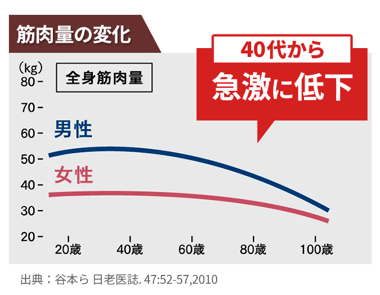
怪我で経験した
「歩けなくなる恐怖」
そんな荻原次晴さんですが、
ある日膝を怪我してしまいました。
ある日膝を怪我してしまいました。
「スキーで転んで
膝の半月板を怪我してしまったです」
そう振り返ると、
松葉杖生活について話してくれました。
当時は子どもと遊んだり、
自分の足でトイレに行ったりできず
「歩けなくなる恐怖をすごく感じた」
と語ります。
さらに追い打ちをかけたのが、
筋肉の落ちるスピード。
ギプスを外した時の太ももの左右差に驚き、
「筋肉って使わないと
あっという間に落ちる」
と実感したそうです。
そのような経験をし
「いつまでも自分の足で歩いていたい」
と強く思うようになった荻原次晴さん。
そこで荻原次晴さんが
アンバサダーとしても愛用しているのが
アミノバイタル®アミノエール®。
膝の半月板を怪我してしまったです」
そう振り返ると、
松葉杖生活について話してくれました。
当時は子どもと遊んだり、
自分の足でトイレに行ったりできず
「歩けなくなる恐怖をすごく感じた」
と語ります。
さらに追い打ちをかけたのが、
筋肉の落ちるスピード。
ギプスを外した時の太ももの左右差に驚き、
「筋肉って使わないと
あっという間に落ちる」
と実感したそうです。
そのような経験をし
「いつまでも自分の足で歩いていたい」
と強く思うようになった荻原次晴さん。
そこで荻原次晴さんが
アンバサダーとしても愛用しているのが
アミノバイタル®アミノエール®。
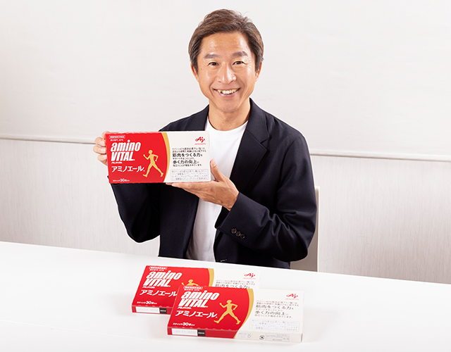
そこで実際に飲んだ感想について
伺ってみました。
伺ってみました。
週末にハードな運動をしても
元気な朝を迎えられるといいます。
「元気よく月曜日の朝を迎えられます」
と答えてくれました。
いつでも手に届くところに置いておくそうで
「私のお守りです」と荻原次晴さん。
元気な朝を迎えられるといいます。
「元気よく月曜日の朝を迎えられます」
と答えてくれました。
いつでも手に届くところに置いておくそうで
「私のお守りです」と荻原次晴さん。
いつまでも
運動を楽しみたい自分へ
このように年齢を気にせず元気に動ける体を
支えるために選ばれているのが、
アミノバイタル®アミノエール®です。
支えるために選ばれているのが、
アミノバイタル®アミノエール®です。
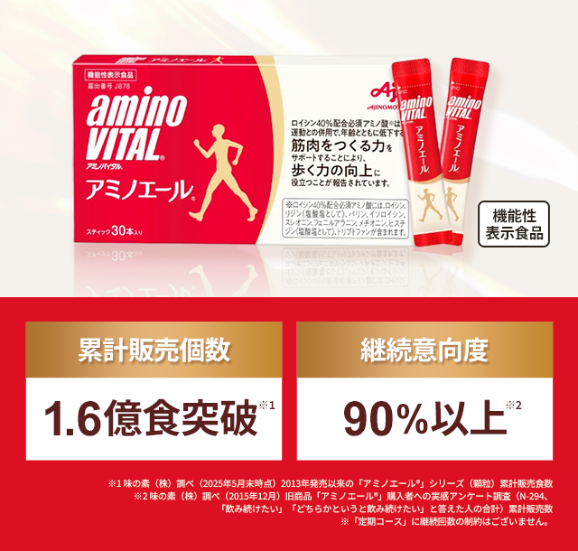
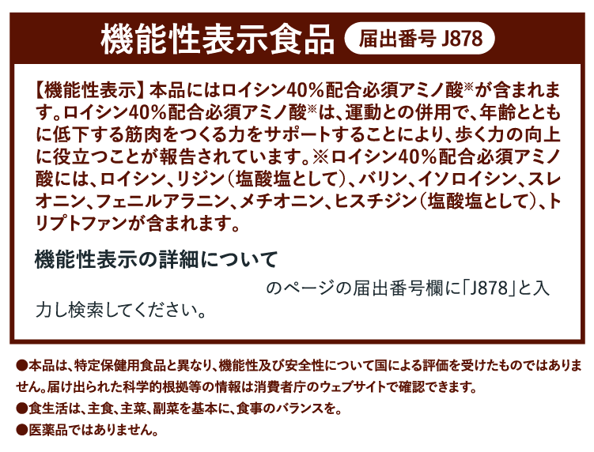
「動きたいときに、スッと動ける」
「外出や買い物の一歩が軽く感じられる」
「年齢を気にせず、運動を楽しめる」
そんな気持ちを応援しています。
「外出や買い物の一歩が軽く感じられる」
「年齢を気にせず、運動を楽しめる」
そんな気持ちを応援しています。
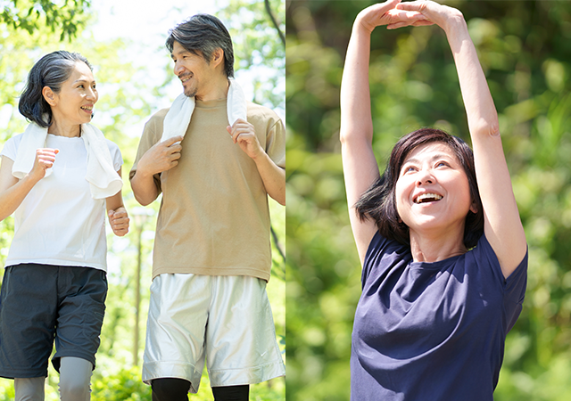
続けたいことに向き合う、
その一歩をそっと後押ししてくれます。
その一歩をそっと後押ししてくれます。
年齢を感じさせない足取りで
登山を楽しむ荻原次晴さん。
では、アミノバイタル®アミノエール®は
どのように歩く力を
サポートしているのでしょうか？
ここからは、
その特徴をわかりやすく紹介します。
登山を楽しむ荻原次晴さん。
では、アミノバイタル®アミノエール®は
どのように歩く力を
サポートしているのでしょうか？
ここからは、
その特徴をわかりやすく紹介します。
魅力①ロイシン40％配合
必須アミノ酸※
アミノバイタル®アミノエール®には、
味の素(株)が独自開発した成分
「ロイシン40％配合必須アミノ酸※」が
配合されています。
味の素(株)が独自開発した成分
「ロイシン40％配合必須アミノ酸※」が
配合されています。
※ロイシン40％配合必須アミノ酸には、ロイシン、リジン（塩酸塩として）、バリン、イソロイシン、スレオニン、フェニルアラニン、メチオニン、ヒスチジン（塩酸塩として）、トリプトファンが含まれます。
筋肉や血液などを作るために欠かせない
必須アミノ酸は、全部で9種類ありますが、
体内で作り出すことはできません。
しかしアミノバイタル®アミノエール®は、
9種類の必須アミノ酸をバランスよく配合した
機能性表示食品です。
さらに食品から摂るよりも吸収が早いため、
効率よくアミノ酸を補給できるのも魅力。
必須アミノ酸は、全部で9種類ありますが、
体内で作り出すことはできません。
しかしアミノバイタル®アミノエール®は、
9種類の必須アミノ酸をバランスよく配合した
機能性表示食品です。
さらに食品から摂るよりも吸収が早いため、
効率よくアミノ酸を補給できるのも魅力。
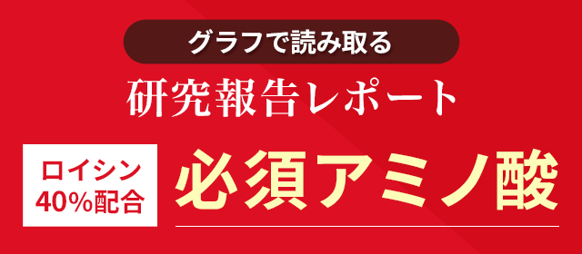
ロイシン40％配合必須アミノ酸を用いた
臨床試験結果では
このような結果も出ています。
臨床試験結果では
このような結果も出ています。
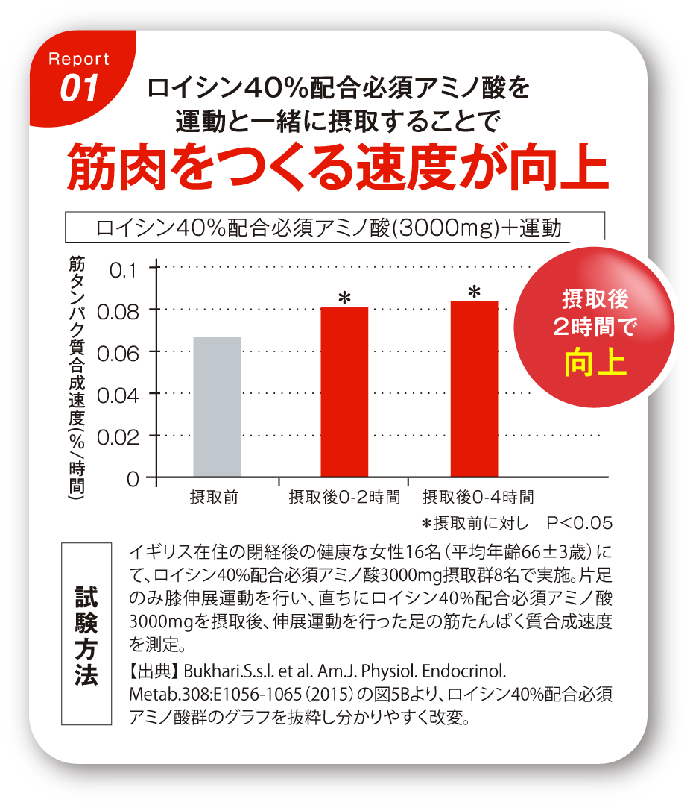
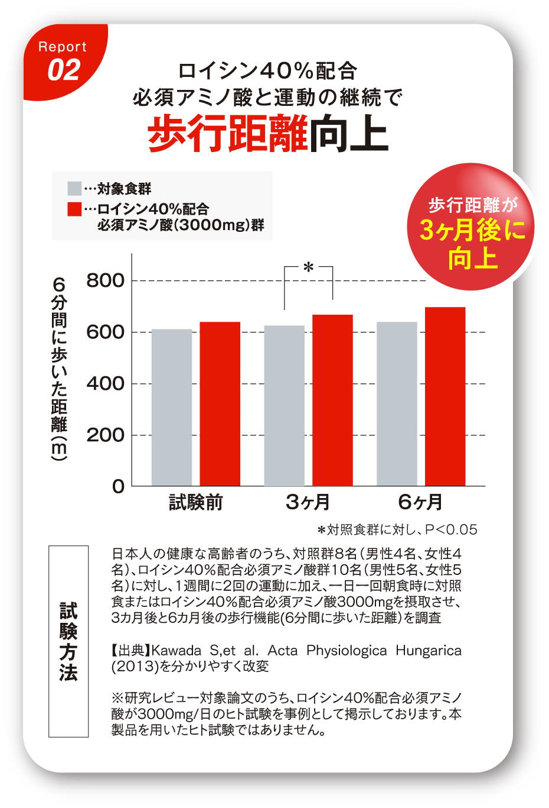
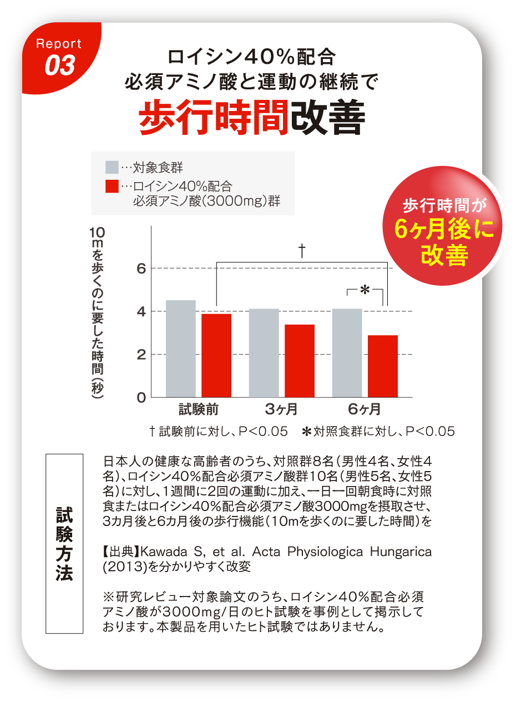
魅力②飲みやすいから
続けられる
クセのない青りんご風味と
溶けやすい顆粒タイプで飲みやすく、
継続しやすいのも魅力です。
溶けやすい顆粒タイプで飲みやすく、
継続しやすいのも魅力です。
荻原次晴さんも飲んでみた感想として
「青りんご風味で、
顆粒の口どけも良く飲みやすいです」
と話します。
個包装で持ち運びやすいので、
運動のお供にもピッタリ。
「青りんご風味で、
顆粒の口どけも良く飲みやすいです」
と話します。
個包装で持ち運びやすいので、
運動のお供にもピッタリ。
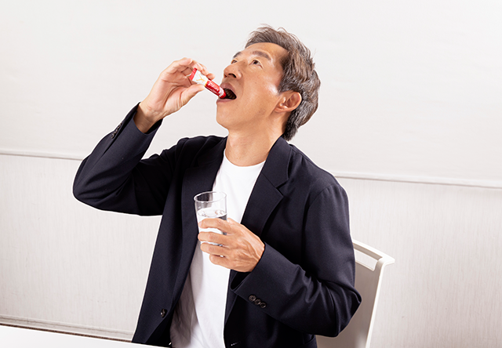
しかも1本あたり14kcalと低カロリーなので、
ダイエット中の方にもおすすめです。
ダイエット中の方にもおすすめです。
魅力③アミノ酸研究
100年以上の歴史
アミノバイタル®アミノエール®は、
アミノ酸研究を100年以上続けている
味の素（株）から生まれました。
「やりたいことを続けたい人」のために
開発されたサプリメントです。
アミノ酸研究を100年以上続けている
味の素（株）から生まれました。
「やりたいことを続けたい人」のために
開発されたサプリメントです。
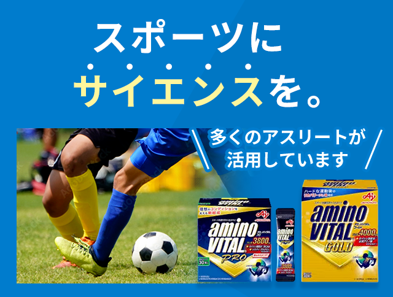
アミノバイタル®は、
長年のアミノ酸研究をもとに開発された
スポーツアミノ酸サプリメント
国内売上NO.1※のブランドです。
長年のアミノ酸研究をもとに開発された
スポーツアミノ酸サプリメント
国内売上NO.1※のブランドです。
※出典：インテージSRI+ 2021年10月～2024年9月 スポーツアミノ酸サプリメント、粉状
最新の栄養科学に基づく配合で、
多くのアスリートのパフォーマンスを
サポートしています。
さらに
「アミノバイタル®アミノエール®」は、
累計販売個数は1.6億食を突破。
多くのアスリートのパフォーマンスを
サポートしています。
さらに
「アミノバイタル®アミノエール®」は、
累計販売個数は1.6億食を突破。
※味の素（株）調べ（2020年4月末時点）2013年発売以来の旧商品「アミノエール」シリーズ（顆粒）累計販売数
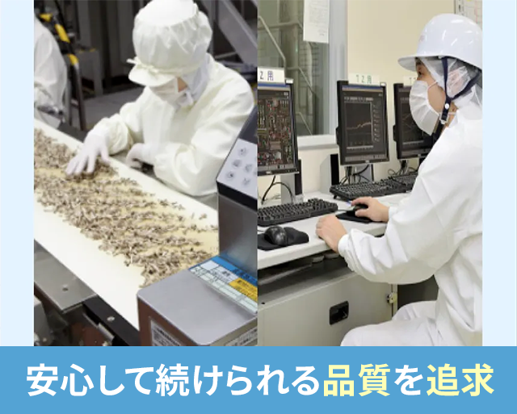
味の素（株）では、
食品メーカーとして長年培ってきた
独自の品質管理基準をもとに、
丁寧に品質をチェックしています。
また製造は、
厚生労働省のガイドラインに沿った
GMP（適正製造規範）認定工場で実施。
毎日口にするものだからこそ、
「安心して選べる品質づくり」
を大切にしています。
食品メーカーとして長年培ってきた
独自の品質管理基準をもとに、
丁寧に品質をチェックしています。
また製造は、
厚生労働省のガイドラインに沿った
GMP（適正製造規範）認定工場で実施。
毎日口にするものだからこそ、
「安心して選べる品質づくり」
を大切にしています。
※公益財団法人日本健康・栄養食品協会による認定で、GMPはGood Manufacturing Practiceの略
※写真はイメージ
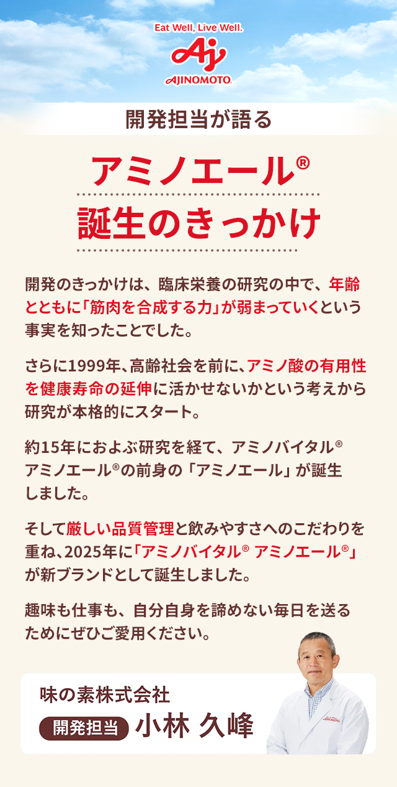
喜びの声が届いています！
多くのお喜びの声が届いています！
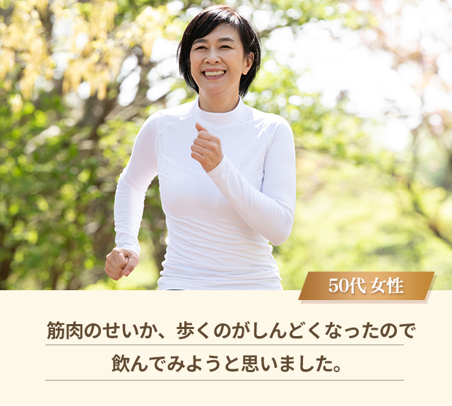
※実感には個人差があります。※個人の感想であり効能効果を示すものではありません。
※年代は取材当時のものです。※画像はイメージです。※いただいたお声を一部修正して掲載しております。
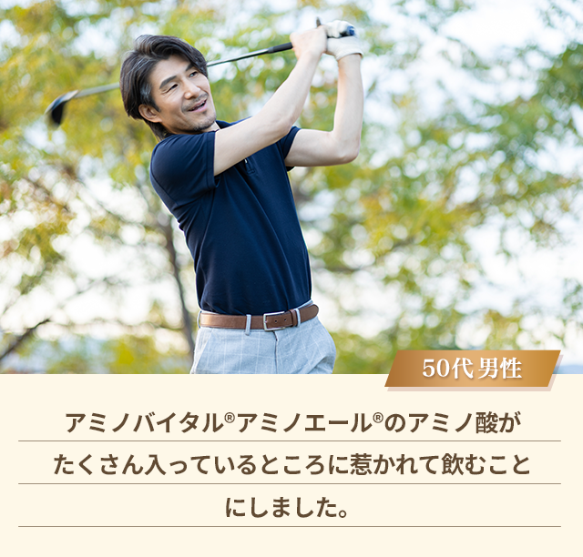
※実感には個人差があります。※個人の感想であり効能効果を示すものではありません。
※年代は取材当時のものです。※画像はイメージです。※いただいたお声を一部修正して掲載しております。
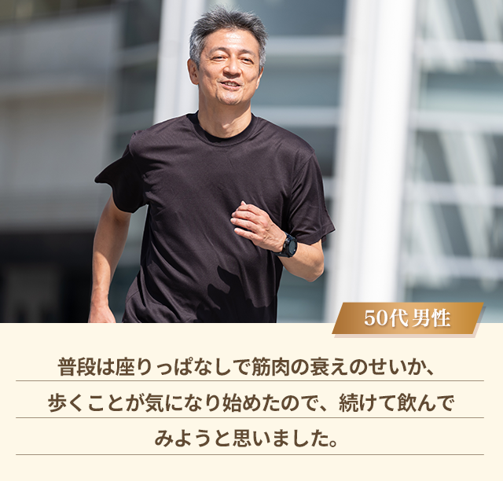
※実感には個人差があります。※個人の感想であり効能効果を示すものではありません。
※年代は取材当時のものです。※画像はイメージです。※いただいたお声を一部修正して掲載しております。
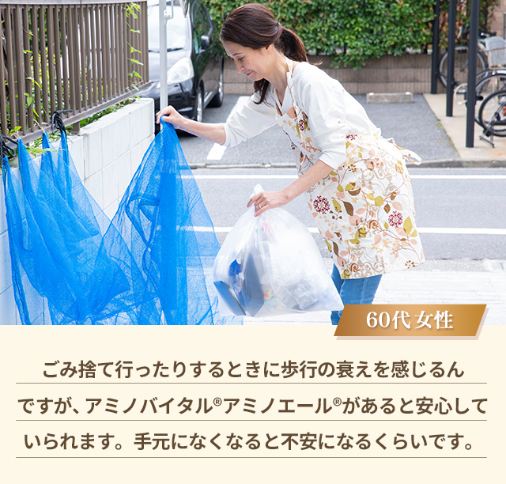
※実感には個人差があります。※個人の感想であり効能効果を示すものではありません。
※年代は取材当時のものです。※画像はイメージです。※いただいたお声を一部修正して掲載しております。
継続意向度は90％以上と
多くの方が満足しています。
多くの方が満足しています。
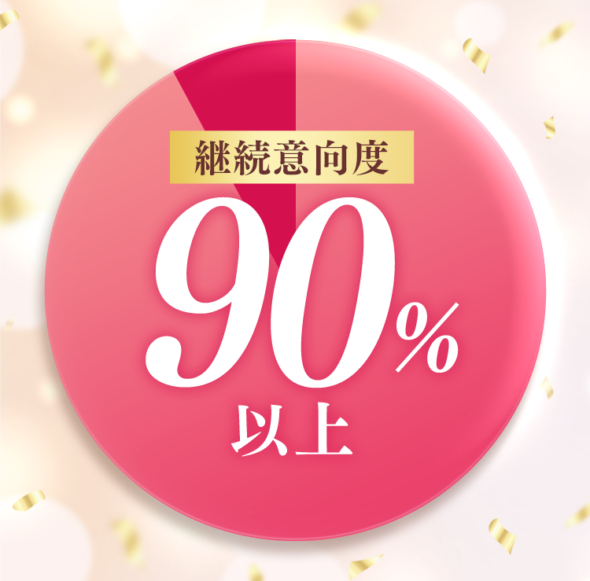
※味の素（株）調べ（2015年12月）旧商品「アミノエール」購入者への実感アンケート調査（N-294、「飲み続けたい」「どちらかというと飲み続けたい」と答えた人の合計）累計販売数
「毎日をもっと軽やかに過ごしたい」
「好きなことを思いきり楽しみたい」
そんな前向きなあなたを支えます。
「好きなことを思いきり楽しみたい」
そんな前向きなあなたを支えます。
怪我を乗り越えて思うこと
アミノバイタル®アミノエール®の
愛用者でありアンバサダーでもある
荻原次晴さん。
愛用者でありアンバサダーでもある
荻原次晴さん。
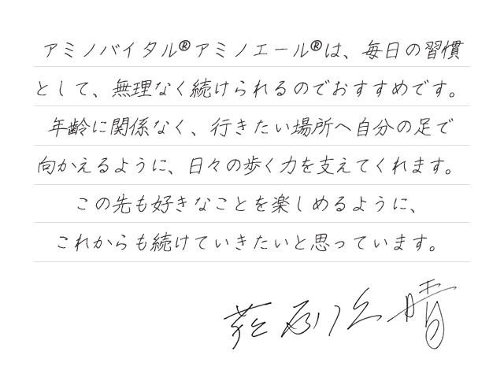
怪我の経験を振り返り
「日常生活を元気に送れる、
というのは当たり前じゃない」
と語ります。
「日常生活を元気に送れる、
というのは当たり前じゃない」
と語ります。
旅行や趣味を楽しむためにも、
同世代にはより健康に気を使って欲しいと
感じているそうです。
いつまでも元気に
自分の足で歩いていきたい方は、
ぜひアミノバイタル®アミノエール®を
試してみてください。
同世代にはより健康に気を使って欲しいと
感じているそうです。
いつまでも元気に
自分の足で歩いていきたい方は、
ぜひアミノバイタル®アミノエール®を
試してみてください。
アンケートに回答で
お得な価格で始められます
アミノバイタル®アミノエール®は
通常価格5,400円(税込)。
ですが、アンケートに回答いただけましたら
お得な価格で購入できます。
通常価格5,400円(税込)。
ですが、アンケートに回答いただけましたら
お得な価格で購入できます。
それではここから
アンケートにご協力ください。
アンケートにご協力ください。
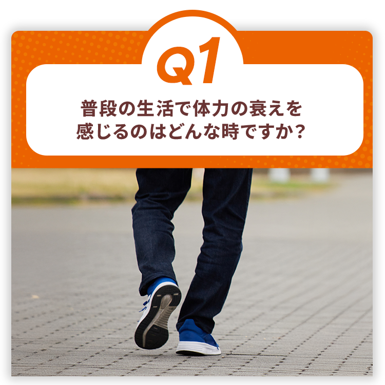
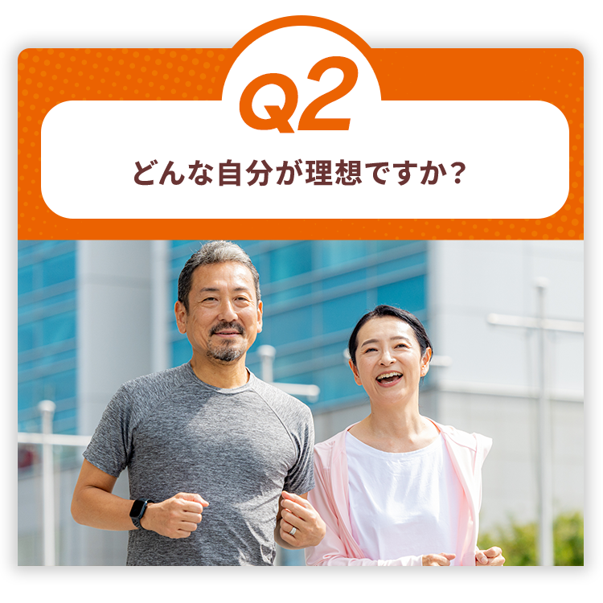
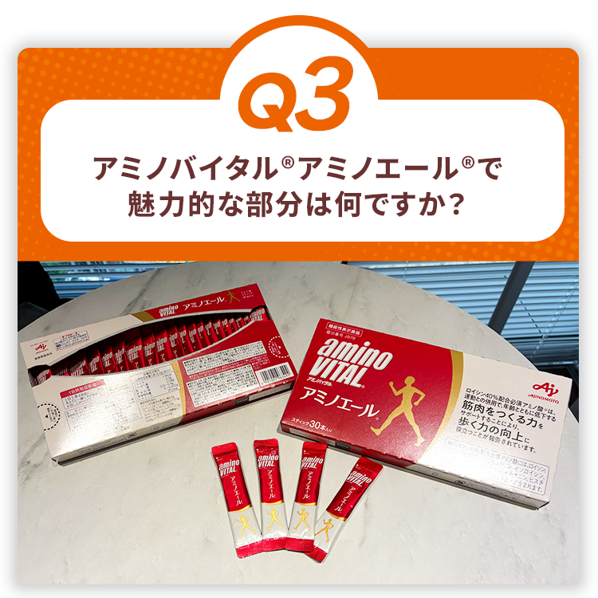
アンケートにご協力いただき
ありがとうございました！
ありがとうございました！
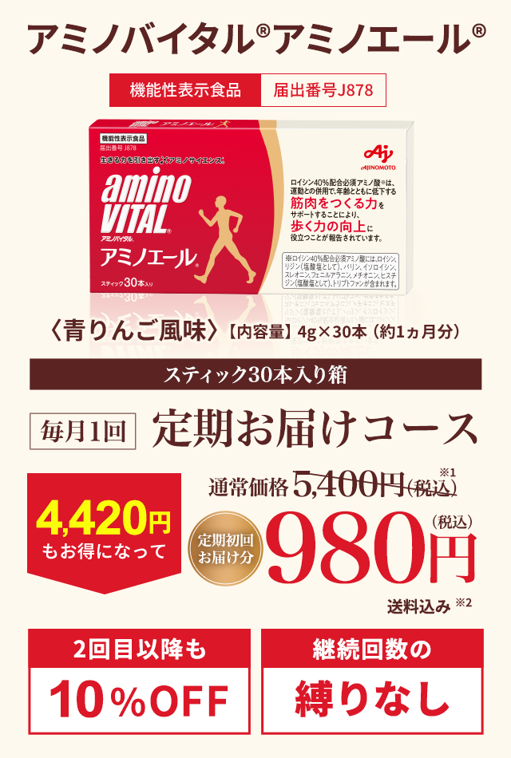
●毎月お届け定期コースは、30日ごとに自動で商品をお届けするコースです。継続回数の制約はございません。
※1：通常価格は味の素ダイレクト（株）オンラインショップでキャンペーン価格以外で購入した場合の価格となり、定期お届けコースの割引額（率）はその価格を元にしています。
※2：定期購入の2回目以降は10%OFFの4,860円（税込）、送料100円（税込）を頂戴します
※1：通常価格は味の素ダイレクト（株）オンラインショップでキャンペーン価格以外で購入した場合の価格となり、定期お届けコースの割引額（率）はその価格を元にしています。
※2：定期購入の2回目以降は10%OFFの4,860円（税込）、送料100円（税込）を頂戴します
定期縛りもなく、途中解約も可能です。
また安心の定期コースで、
日々の健康をサポートします。
また安心の定期コースで、
日々の健康をサポートします。
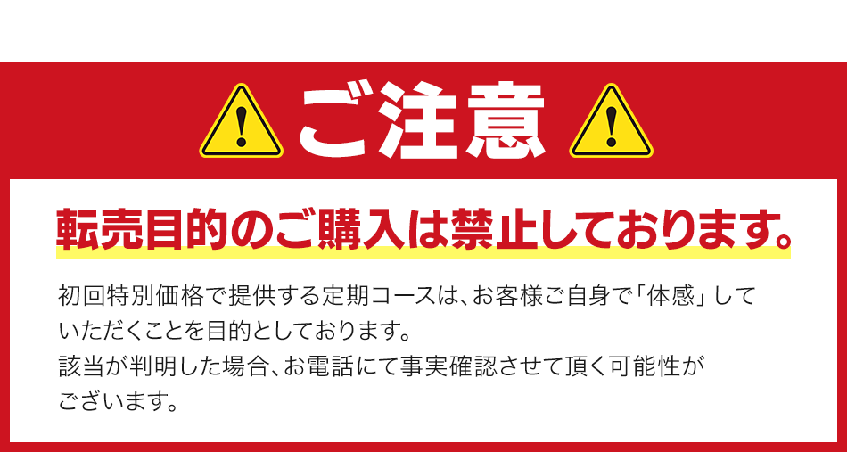
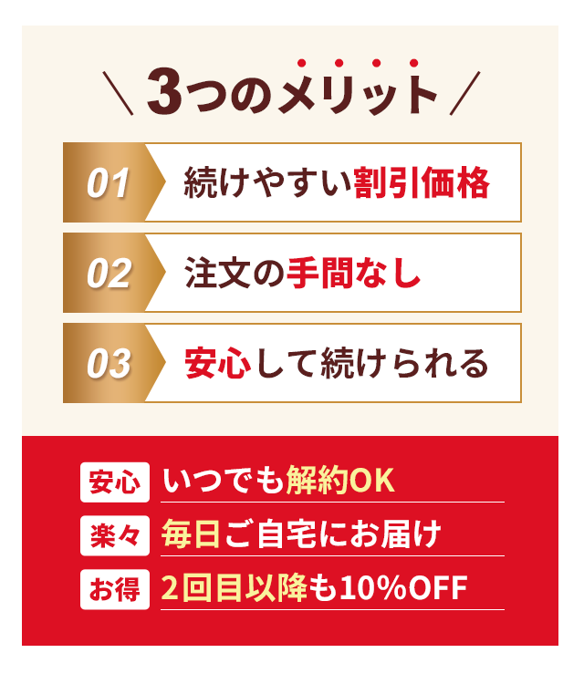
さらに
コンビニ後払いとクレジットカード払い
どちらでも購入できるので便利です。
コンビニ後払いとクレジットカード払い
どちらでも購入できるので便利です。
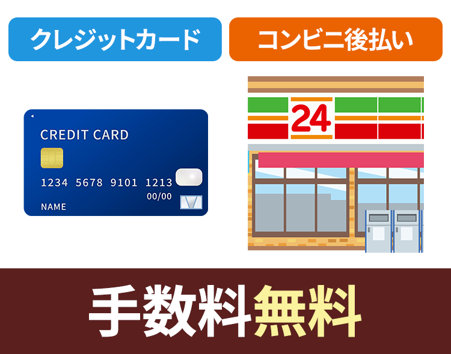
これからの人生を自分らしく
もっと楽しんで過ごしたい方は、
ぜひこの機会に始めてみてください。
もっと楽しんで過ごしたい方は、
ぜひこの機会に始めてみてください。
いつ飲めばいいですか。
お薬ではないので、タイミングの指定はありません。毎日続けていただくために、朝食時やお休み前、運動する前、と時間を決めてお召し上がりいただくことをおすすめします。
毎日飲み続けても大丈夫ですか？
食品ですので、日々の食事にプラスして、毎日続けてお召し上がりいただけます
ビタミンDの摂取上限はありますか？
ビタミンDの現在の摂取上限量（1日あたり）は、厚生労働省により100μg※と定められています。この数値を参考に、普段の食事とあわせて過不足なく補給できる量の20μgを配合しました。なお、活性型のビタミンDを摂取されている場合は、お召し上がりになる前に医師にご相談ください。医療従事者さま向けの資料のご用意もございます。お客様係までお問い合わせください。
※厚生労働省「日本人の食事摂取基準2025年度版（18歳以上の男女の場合）」より
※厚生労働省「日本人の食事摂取基準2025年度版（18歳以上の男女の場合）」より
お薬を飲んでますが、問題ないですか？
食品ですので、基本的には心配ございませんが、薬の種類によっては飲み合わせに考慮が必要な場合があります。疾病に罹患している場合は医師に、医薬品を服用している場合は医師、薬剤師に摂取について相談してください。
アレルギーが心配です。
食品表示法によるアレルギー特定原材料等28品目は含まれておりません。
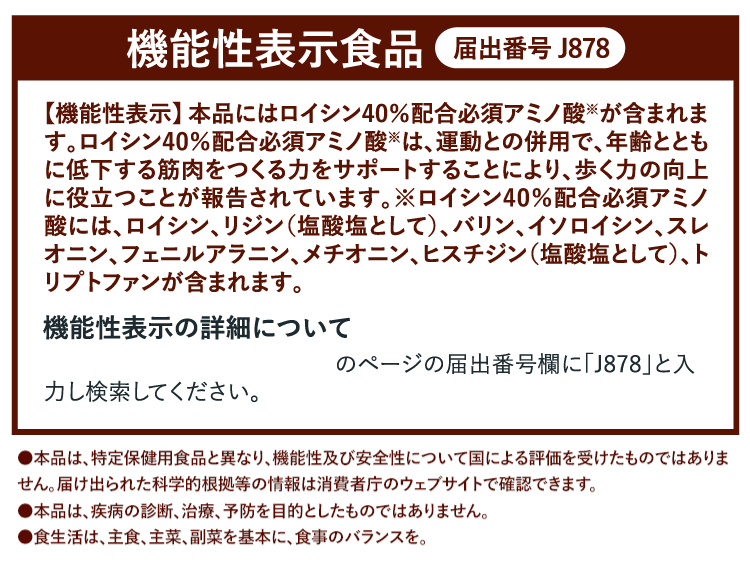